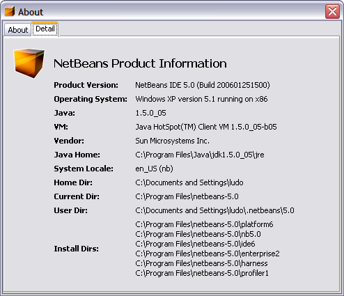
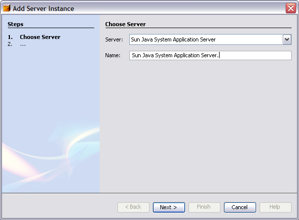
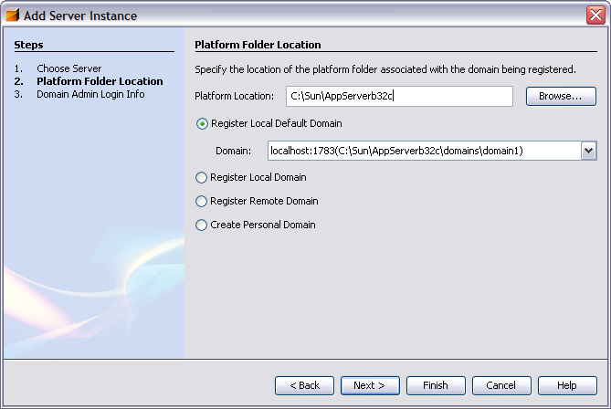
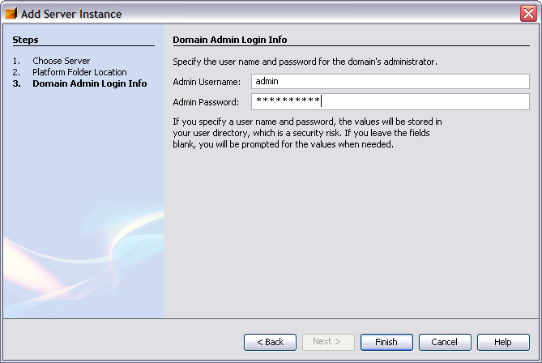
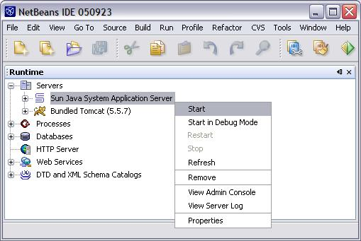

New to GlassFish |Community Rules | Downloads | Resources | How-Tos
Netbeans IDE 5.5 can be used to develop applications on GlassFish V1. A new version (NetBeans 5.5.1) will target GlassFish V2 as a server target (see below for instructions).
Developing Java EE 5 applications using Netbeans 5.5
NetBeans 5.5 IDE supports many of the Java EE 5 features including- GlassFish server registration
- Annotation support
- Persistence support: db to java generation, as well as java
to db. JSF form generation from entity beans
- Derby database support
- GlassFish resource creation and registration
- Optional deployment descriptor (ease of development)
- All existing NetBeans 5.0
features
There are otherss tutorials available for building enterprise applications using NetBeans.
Start by building a simple hello world application using EJB 3.0 and JSF 1.2
- Install GlassFish promoted or nightly build
- Install NetBeans.next nightly build and develop an Hello world application
- Java to DB Generation
- DB to Java Entity Beans generation
- JSF Form CRUD Generation
A more advanced enterprise application using Java EE 5 persistence and Derby. This tutorial contains useful database setup scripts.
Accessing NetBeans 5.5.1 daily builds
For GlassFish V2 users, the NetBeans 5.5.1 daily builds are accessible via:- 1. http://www.netbeans.org/
- 2. "Download NetBeans IDE"
- 3. "All NetBeans Products" (on the right under Development Builds of Upcoming Releases)
- 4. Choose 5.5.1 and Continue
- 5. Download the desired build
Developing J2EE 1.4
applications using Netbeans 5.0
NetBeans IDE 5.0 already supports the GlassFish application server. While NetBeans 5.0 is being certified with the Sun Application Server 8.1 and 8.2, it works also with the latest GlassFish builds. You just need to register a GlassFish installation directory instead of a Sun Application Server 8.x installation directory. NetBeans 5.0 supports only the J2EE 1.4 specification, so that all the J2EE applications you create will not support the latest Java EE 5 specification constructs (Annotation, optional deployment descriptors, persistence support, etc...). Those applications will in any case run on GlassFish.
Start developing your applications:
- Install GlassFish promoted or nightly build
- Install
NetBeans 5.0
- Register GlassFish server instance
- Use NetBeans to develop your application
- The
Web Application QuickStart guide
- The J2EE QuickStart guide
- The Web Services QuickStart guide
- The Web Services Client QuickStart guide
- The J2EE 1.4 Tutorial for NetBeans IDE
How to register a GlassFish server in NetBeans 5.0?
First, make sure you are using JDK 1.5 or above, for the NetBeans IDE. If you are not sure, look at the Help | About menu item and select the tab called "Details":
If you are still using a JDK 1.4 version, restart the ide with the -jdkhome option pointing to a JDK 1.5 location, for example like:
C:\\netbeans\bin\nb.exe -jdkhome "C:\Program Files\Java\jdk1.5.0_04"
Secondly, make sure you do not use the NetBeans 5.0 Beta cobundle with App Server 8.1, or that you did not register an AS 8.1 server already with the IDE. There is a limitation in NetBeans 5.0 Beta that disallow co existence within the same IDE of both App Server 8.1 and GlassFish instances.
Once NetBeans is installed go to the Servers node in the runtime tab and select "Add Server..." popup menu item. This will display the following wizard:

Select "Sun Java Application Server" as the Server type. This works with the GlassFish server. Click the Next> button and specify the directory where GlassFish has been installed.

Click on Next> again and you can register the admin user name and password for the default GlassFish domain:

Click the "Finish" button. You should now have a GlassFish Server instance registered in the IDE runtime tab:

What can you do with a GlassFish server in NetBeans 5.0?
Remember that the GlassFish Java EE 5 server is still under development and cannot be compared to the Sun Java System Application 8.2 product in terms of stability, but here is a list of features exposed in NetBeans 5.0 that are related to servers integration:
| Features | AS 8.1,
8.2 and GlassFish |
Tomcat 5.0/5.5 |
|---|---|---|
| Start and stop the server (local) | |
|
| Deployment and redeployment | |
|
| Remote deployment | |
|
| Undeployment | |
|
| Remote Undeployment | |
|
| Fast directory-based deployment (Web) | |
|
| Java debugging | |
|
| JSP source level debugging | |
|
| J2EE Profiling (via Profiler cluster) | |
|
| View console output (for local server) | |
|
| View log files | |
|
| Edit server's conf file (via Favorites tab, then xml editor) | - | |
| List deployed applications | |
|
| List sub elements in deployed applications, and display properties | |
|
| List/Edit registered server resources (R/W mode) | |
|
|
Admin UI laucher |
|
|
| HTTP monitoring | |
|
| Generate server-specific CMP and JNDI data (no manual steps needed) | |
N/A |
| Visual editing of server-specific data | |
|
| View servlet generated from JSPs | |
|
| Complete Web Services support | |
|
| Complete EJB CMP Mapping tool | |
N/A |
| Zero config support (auto creation/registration of resources) | |
|
| Out of the box Blueprints solutions working | |
|
|
Single bundle, easy
to install
with NetBeans (Currently only for AS 8.x) |
|
|
| Server JVM options configuration | |
|
| Selection of target JVM ( yes, but there is a server bug there) | - | |
| Server specific DD XML code completion/validation | |
|
| J2EE Verification (only when AS8.1, 8.2 or GlassFish server is registered) | |
|
| Server specific Resource creation wizards and registration | |
|
| Secure Server (HTTPS) admin access and certificate validation | |
? |
| JSR 88 graphical configBeans implementation | |
|
| Complete support for server specific ANT tasks OOB | |
|
| OOB JSF support (faces xml code completion/validation, lib registration from app server area,...) | |
|
| Pointbase DB integration (start/stop menu, driver, samples, ...) (Only when AS8.1 is installed and registered, not for GlassFish) | |
|
| Pointbase driver pre-configure for AS 8.x Server runtime | |
|
| AVK (application Verification Kit) ready (via extra AVK plugin on Auto Update Center) | |
|